| 日付 | 2009年2月7日（土） |
|---|---|
| 山域 | 日光周辺 |
| メンバー | 単独 |
| 山行形態 | 日帰り |
| アクセス | 電車 |
| ルート (Map) | 東武日光駅→神ノ主山→鳴虫山→独標→日光駅 |
昨年登ろうと思っていたが、雨のため登れなかった女峰山。
その女峰山を望むため、日光山郡の展望台である鳴虫山に行く事にする。
8:30 東武日光駅到着。標高545m。
社山に登ったとき以来の日光だ。
日光市街からは高く聳える女峰山がよく見えている。

鳴虫山登山道入口に到着する。駅から直接歩ける山で、
登山道入口までの指導標は完璧に整備されている。
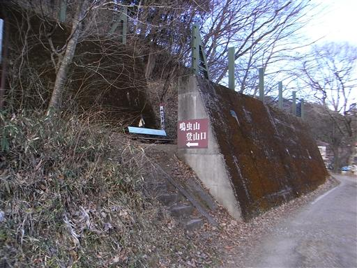
少し登ったところに天王山神社が祀られている。
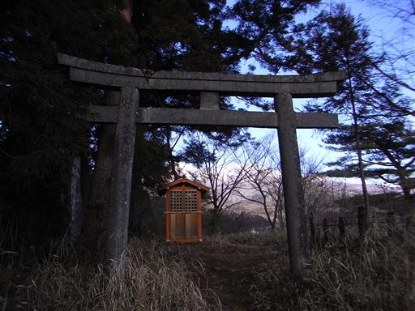
低山とはいえ場所は日光。かなり深い雪を覚悟してきたのだが、全く雪がない。
この様子だと山頂まで行ってもほとんど雪はなさそうだ。
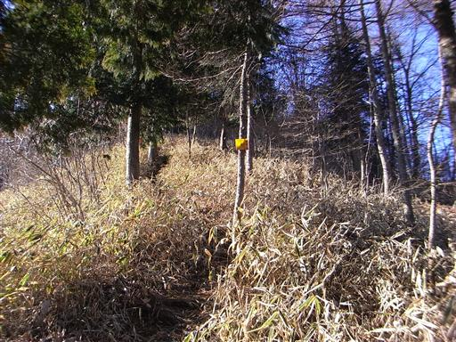
神ノ主山に到着。美しい女峰山が一望できる。
豪雪に耐えて白く染まった女峰山を望もうと思って来たのだが、
女峰山にもあまり雪が積もっていない。今でも登れそうなくらいだ。
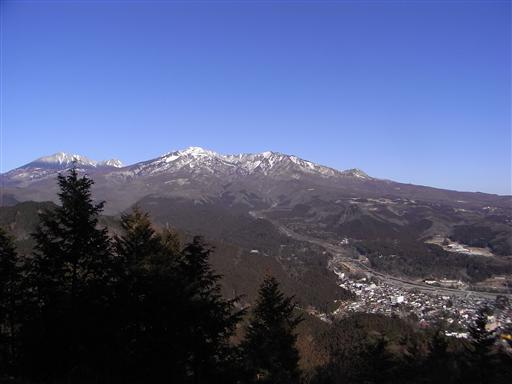
登山道は途中から急坂になるが、長くは続かない。
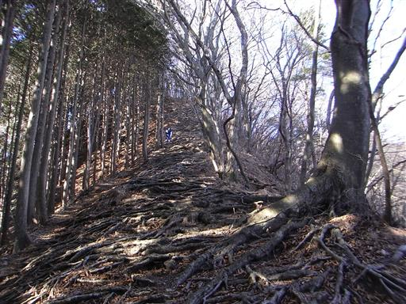
10:08 鳴虫山山頂到着。標高1103m。
山頂にも全く雪がない。
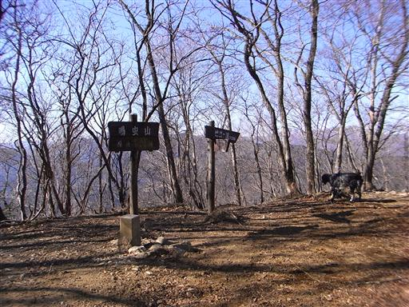
山頂にはささやかな展望台が設けられている。
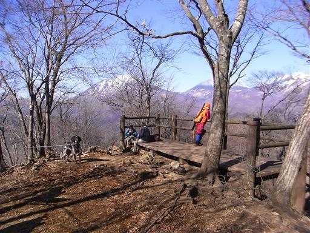
まず目をひくのは女峰山。今年こそはあの頂きを目指したい。
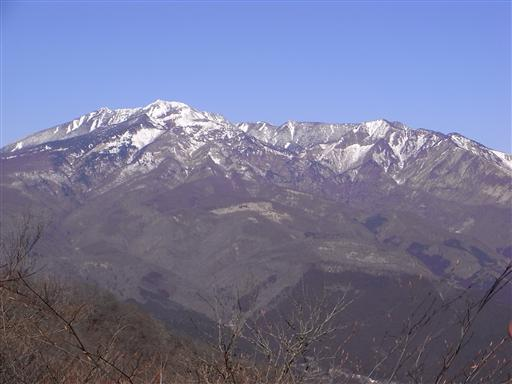
樹木の隙間からは日光男体山の姿も見える。
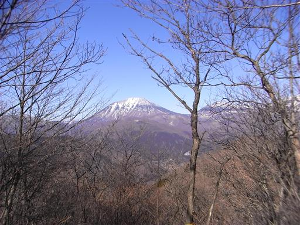
昼食をとって下山を開始する。下山道はなかなか急な尾根道だ。

冬枯れの気持ちのよい道を下っていく。なぜか落ち葉はほとんどない。
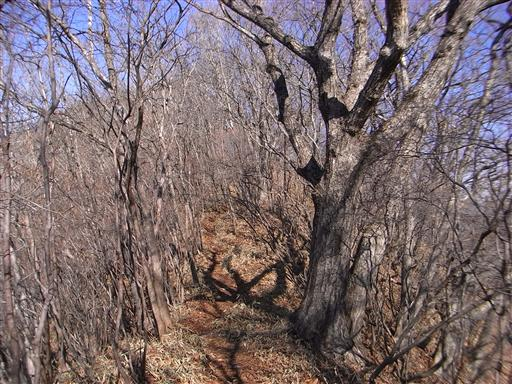
しばらく下ると車道に到着する。あとは車道を延々と歩いていく。
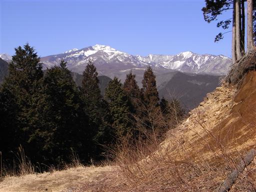
並び地蔵。沢山の地蔵が並んでいる。
数えるたびに数が違うことから、化け地蔵とも呼ばれている。
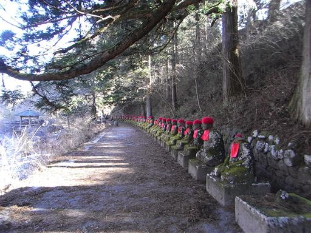
憾満ヶ淵。岩盤が削られた美しい渓谷。
どこかで見たことのある景色だと思ったら、日光東照宮に行ったときに
あてもなく付近をうろついていて辿り着いた場所だった。
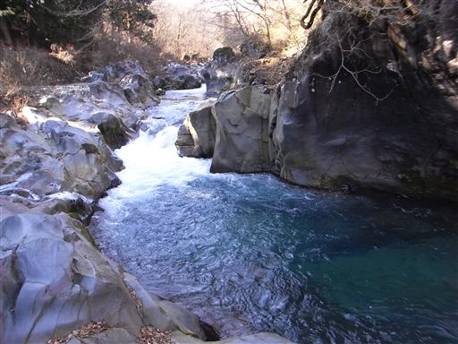
たまっている水はがっちり凍り付いている。
今年は暖冬で、雪も少ないがやはりこの辺りは相当冷えるようだ。
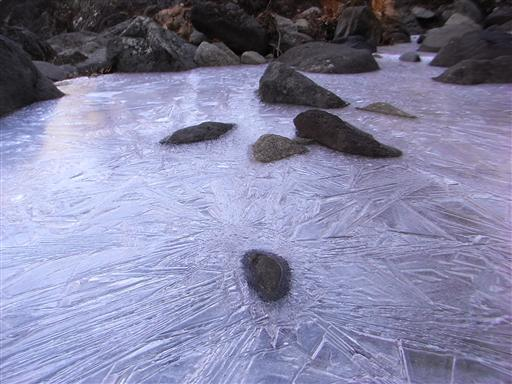
ここから歩いて日光駅を目指す。観光客の姿がちらほら見える。
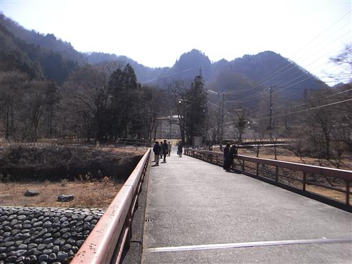
神橋。この橋は渡るだけで入場料が取られる。
渡っている観光客は誰もいない。
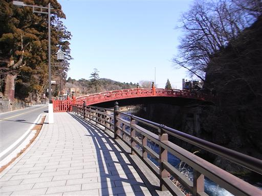
日光市街地に戻ってくる。わざわざ山に登らなくても、
市街地からでも十分きれいな女峰山が望める。
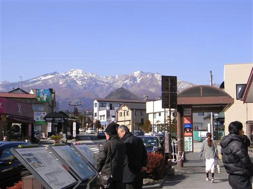
13:11 日光駅到着。標高545m。
帰りはJRを使うことにする。雪で苦労すると思っていたのに、
あっけない日だまりハイキングになってしまった。
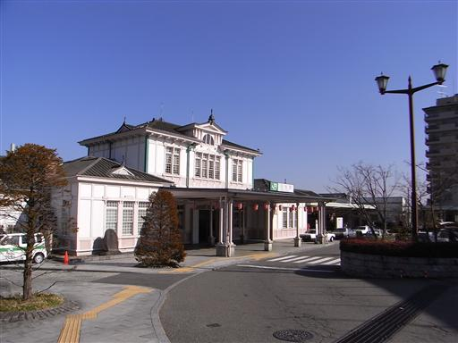